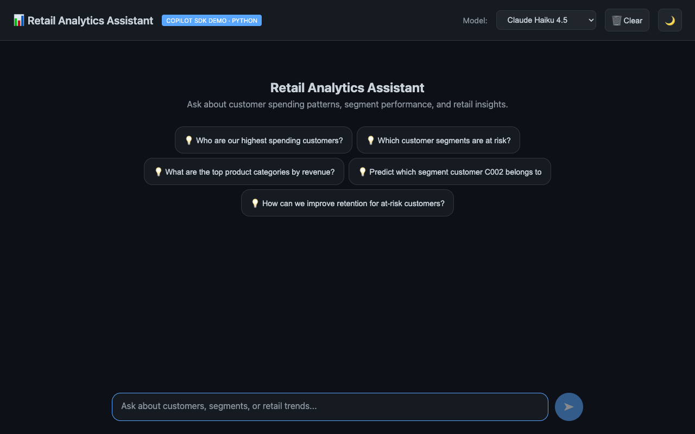
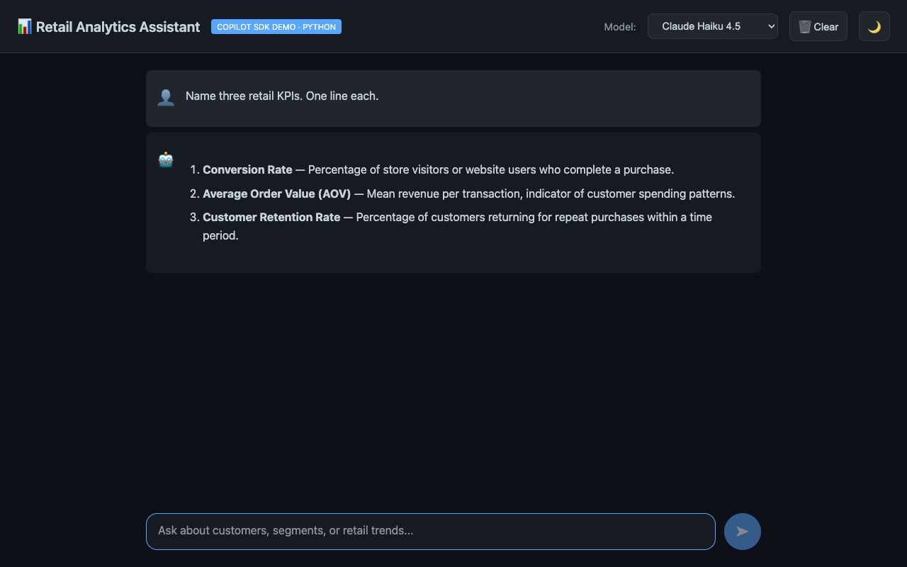

網頁使用者介面¶
本導覽說明位於 Python 零售分析 API 前端的靜態瀏覽器用戶端。您將了解 FastAPI 如何提供檔案、原生 JavaScript 如何將聊天回應串流至訊息清單、如何保存本機設定，以及模型選擇器如何與目前可用的模型清單保持同步。
應用程式結構與連接埠¶
Python 使用者介面由下列位置的靜態 HTML 與原生 JavaScript 組成： app/static/index.html 與 app/static/app.js。它由 FastAPI 提供，而不是 Blazor WebAssembly。
此架構不需要建置步驟，也不必下載 WebAssembly 執行階段；代價是沒有元件模型、編譯期使用者介面型別安全性或自動產生的用戶端程式碼。
單一伺服器會透過連接埠 5070 同時提供 API 與使用者介面。這與 .NET 路線不同；在 .NET 路線中，API 執行於 5050，Blazor 使用者介面則執行於 5051。由於瀏覽器要求來自相同來源，一般使用者介面路徑不需要經過 CORS。
⚠️ 連接埠不能任意選擇。Chrome、Edge 與 Firefox 會完全封鎖連接埠 5060 （SIP），因此若從該處提供使用者介面，會出現 ERR_UNSAFE_PORT 錯誤，即使 curl 可以成功。為瀏覽器必須載入的服務選擇連接埠時，請避開 5060、5061 與 6000。
尚無訊息時，頁面會顯示歡迎標題與五個建議的零售問題：

FastAPI 靜態掛載¶
app/main.py 會先加入 API 路由器：
app.include_router(chat.router)
app.include_router(transactions.router)
app.include_router(segments.router)
接著將靜態應用程式掛載於 /：
# Mounted last so it does not shadow the /api routes above.
app.mount("/", StaticFiles(directory=STATIC_DIR, html=True), name="static")
⚠️ 順序很重要。 StaticFiles 掛載於 /，因此若在路由器之前掛載，就會遮蔽 /api/... 要求。
index.html¶
index.html 包含完整的頁面框架：頁首、模型選擇器、清除按鈕、佈景主題切換按鈕、訊息容器、歡迎面板、建議項目、文字區域與傳送按鈕。
頁面會從 CDN 載入 marked 與 highlight.js，用於呈現 Markdown 與醒目提示語法。樣式表為 app/static/app.css；此檔案複製自 Blazor 專案，並移除 Blazor 專用規則，讓兩條路線的外觀一致。
頁面狀態與本機儲存空間¶
app.js 會維持與 Blazor Home.razor 頁面相同的狀態：
let messages = [];
let selectedModel = 'claude-haiku-4.5';
let isDark = true;
let isStreaming = false;
它使用與 Blazor 用戶端相同的索引鍵，保存訊息、所選模型與佈景主題：
loadState() 會在頁面載入時還原這些值； setTheme() 會更新根類別、highlight.js 佈景主題，以及 localStorage 值。
模型選擇器¶
模型選擇器會擷取 GET /api/chat/models：
API 會傳回 JSON 清單，其中包含 {id, name, description}。使用者介面會將此清單縮減為 Blazor ChatService 所使用的 ID → 標籤字典結構：
const list = await res.json();
if (Array.isArray(list) && list.length > 0) {
models = Object.fromEntries(
list.filter((m) => m.id).map((m) => [m.id, m.name || m.id])
);
}
如果無法連上 API，頁面會改用包含六個模型的靜態目錄（claude-haiku-4.5、 gpt-4.1、 gpt-5、 claude-sonnet-4.5、 claude-opus-4.5、 gemini-2.5-pro）。如果 localStorage 中儲存的模型已過時，則會以 claude-haiku-4.5 取代（若可用）；否則使用第一個目前可用的模型。
串流呈現¶
sendMessage() 會附加使用者訊息、加入空白的助理預留位置，並向 SSE 端點送出 POST 要求：
const res = await fetch('/api/chat/stream', {
method: 'POST',
headers: { 'Content-Type': 'application/json' },
body: JSON.stringify({ prompt, model: selectedModel }),
});
⚠️ 該欄位名稱不可變更。 較早的修訂版本傳送的是
{ message: prompt, ... }。 ChatRequest 宣告的是 prompt，而 Pydantic 會忽略未知索引鍵，不會拒絕它們。因此要求傳回 200 並串流實際回應，但輸入的提示卻在沒有任何通知的情況下遭捨棄。整個流程沒有報錯；模型只是回答了一個空白問題。
這正是在用戶端與伺服器邊界使用寬鬆剖析器的完整風險，因此 tests/test_chat_contract.py 會判斷 app.js 所送出的欄位正是 ChatRequest 所讀取的欄位。
回應本文會使用下列項目讀取： fetch()、 res.body.getReader()，以及 TextDecoder：
每次讀取的內容都會解碼並分割成多行，結尾尚未完整的行會保留至下一次讀取：
buffer += decoder.decode(value, { stream: true });
const lines = buffer.split('\n');
buffer = lines.pop() ?? '';
剖析器會尋找 data: 訊框、將 [DONE] 辨識為完成哨兵值，並且只附加 content 值。伺服器會在 [DONE] 之後關閉回應，因此讀取器迴圈會結束。
if (!line.startsWith('data: ')) continue;
const payload = line.slice(6);
if (payload === '[DONE]') continue;
呈現節流¶
使用者介面每隔 50 毫秒重新繪製一次，約為每秒 20 個畫面：
const timer = setInterval(() => {
if (!needsRender) return;
needsRender = false;
messages[messages.length - 1].content = content;
renderMessages();
}, 50);
這直接對應到 Blazor 用戶端的呈現計時器。快速模型可能產生數百個差異片段；若每個權杖都重新繪製，會浪費瀏覽器資源，並降低捲動的穩定性。
輸入、建議與佈景主題¶
按一下按鈕或在未按住 Shift 時按 Enter，即會送出輸入內容；串流期間會停用輸入，回應完成後則恢復焦點。建議選項與輸入文字使用相同的傳送路徑，其中包含如下字串： Who are our highest spending customers? 與 Predict which segment customer C002 belongs to。佈景主題按鈕可切換深色與淺色模式，並變更作用中的 highlight.js 樣式表。
以下是透過上述路徑呈現的完整對話：
